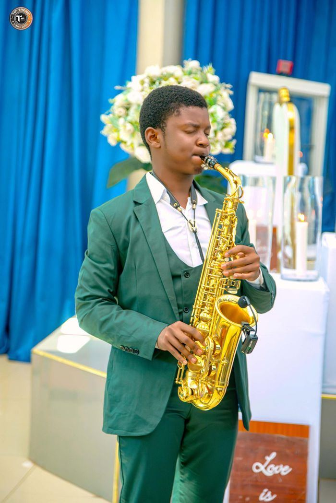
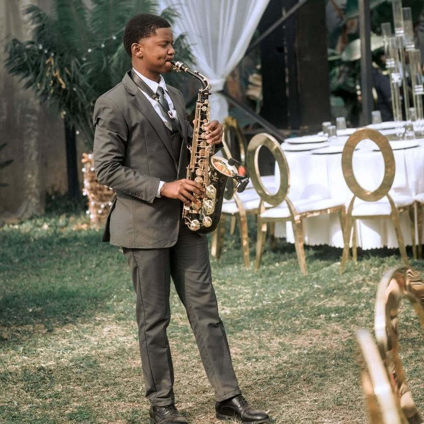
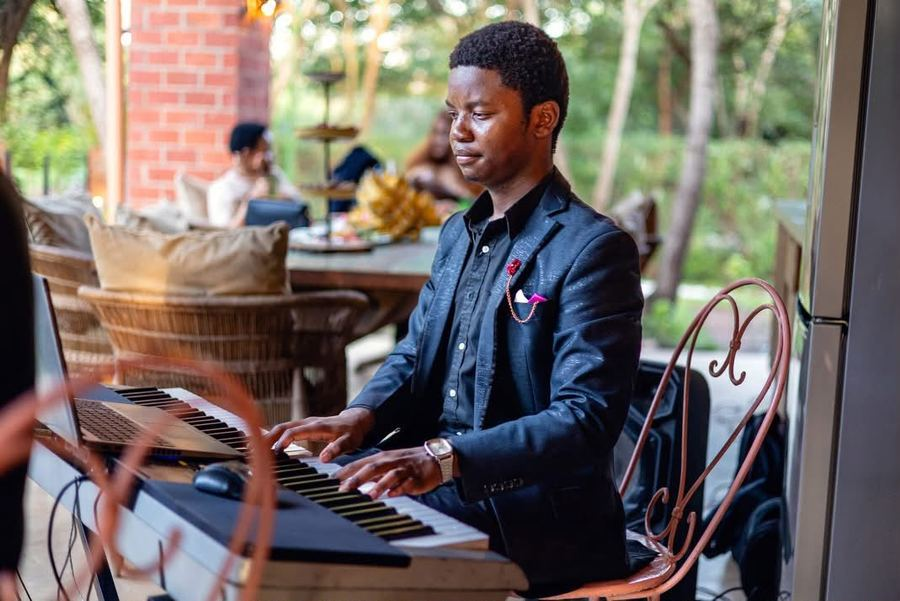
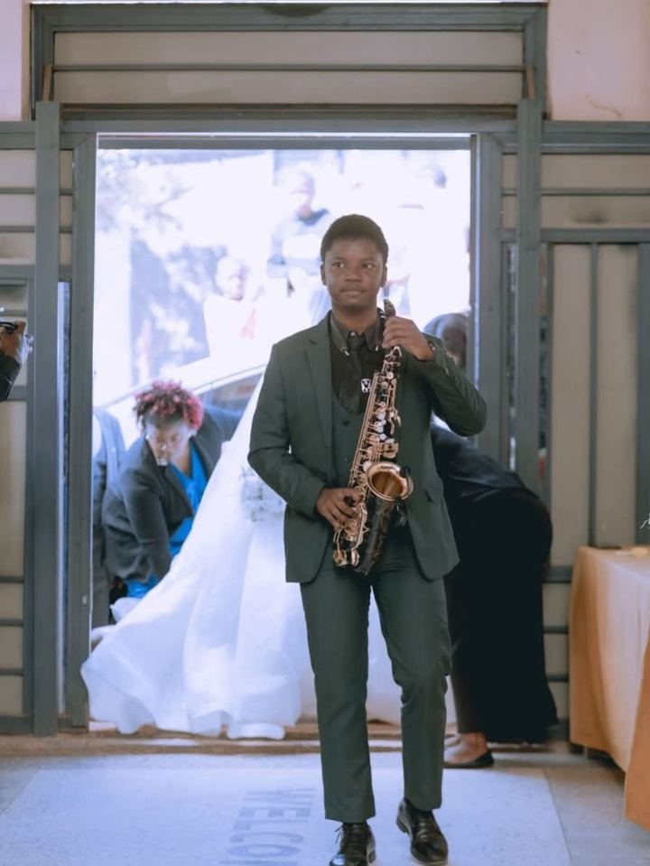
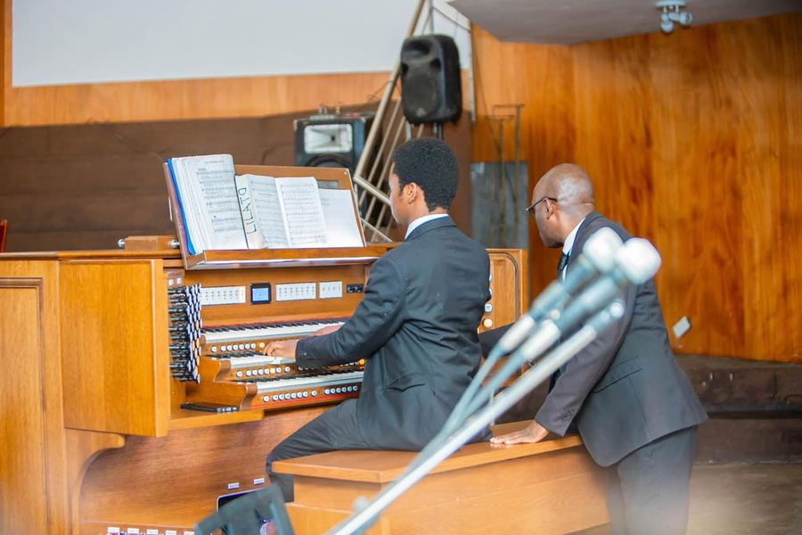
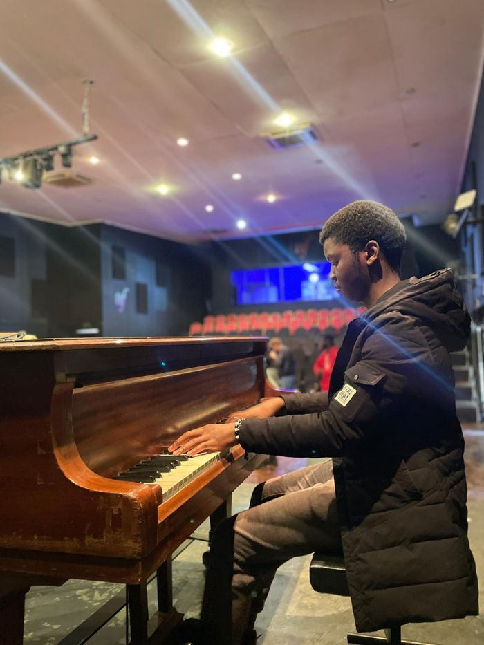

About
Crispin Libimba II, known professionally as Cris K, is a young multi-instrumentalist born in Lusaka, Zambia. He plays piano, alto saxophone, flute, and clarinet, and has been active in the music industry since 2021.
His first music came through the New Apostolic Church, where he learned to play worship and classical music as a primary school child. He went on to learn more instruments and more styles, and today he plays classical, jazz, and secular music.
Friends and audiences know him for a funny, fun personality that lets him fit in with many kinds of people. He now performs as a solo artist, on his own or in collaboration with other musicians.

Journey
-
2015
Starts on the descant recorder. A toy piano follows, and it shows his father enough potential that he buys him a small keyboard at a very young age.
-
April 2016
Begins piano lessons at Evelyn Hone College and studies for almost a year, until his tutor moves to China.
-
After the lessons
Without a teacher, he researches the piano and keeps learning on his own.
-
2021
Plays his first performance with a friend at a birthday party for his friend's mother.
-
November 2022
Joins Vivo Music and Entertainment, formerly Glued Tones Creatives, and performs at a wide range of venues.
-
December 2022
Completes high school and can focus fully on his music career.
-
Today
Performs as a solo artist, on his own or in collaboration with other musicians.
Music
- Piano
- Studied from April 2016 and developed largely through his own research and practice.
- Alto saxophone
- The instrument behind his handle, Sax Guy.
- Flute and clarinet
- Played alongside piano and saxophone.
- Styles
- Classical, jazz, and secular music, with worship and classical music as his starting point at church.
Performances
- Intercontinental Hotel
- Irish Embassy's residence
- Le Elementos Boutique Hotel
- Pick n Pay stores
- Circus Zambia
- Bo'Jangles Pub and Grill
- Modzi Arts
- Alliance Française
- And many others
Photos





Contact
- Phone
- +260 777 601 734
- +260 763 299 221
- cris_k_sax_guy
- TikTok
- cris.k.sax.guy